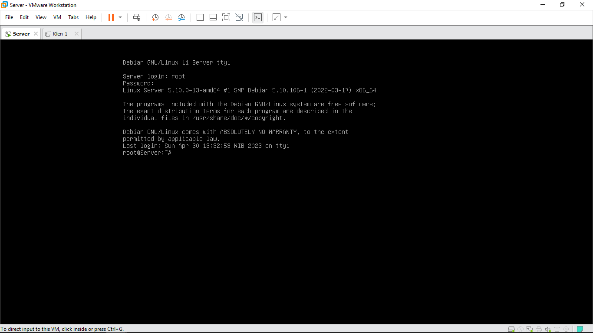

Introduction
Halo semua! Saya Rizqi Amalia, pada artikel kali ini akan membahas cara konfigurasi Dynamic DNS pada Debian 11. Tutorial ini bertujuan agar para pembaca bisa melakukan konfigurasi dan mengetahui fungsi dari setiap komponen yang ada. DDNS sendiri adalah materi Linux yang termasuk tingkat menengah keatas, dimana harus memiliki pemahaman tentang jaringan, DNS dasar, dan pengalamatan IP. Namun dengan latihan giat, pemula sekalipun bisa melakukan konfigurasi DDNS di Debian 11 ini. So, what you waiting for?
Theory
Dynamic Domain Name System (DDNS) adalah sebuah teknologi yang memungkinkan pengguna untuk menghubungkan alamat IP yang berubah-ubah dari suatu jaringan ke nama domain yang tetap. Dalam DDNS, sebuah perangkat lunak atau layanan secara otomatis memperbarui informasi DNS untuk mengarahkan nama domain ke alamat IP yang baru.
Analoginya, jika ada klien yang mendapat IP otomatis dari DHCP Server, maka akan dibuatkan domain secara otomatis oleh DDNS. Dimana nantinya pengguna dapat menggunakan nama domain yang mudah diingat dan tetap. Tanpa perlu tau alamat IP yang berubah-ubah.
DDNS biasanya berguna dipakai dalam jaringan rumah atau kantor kecil yang menggunakan koneksi internet dengan IP dinamis. DDNS juga digunakan untuk memudahkan remote access dan pengaturan sistem keamanan jaringan.
Topology
Berikut topologi yang akan saya gunakan pada tutorial kali ini :
Preparation
- Siapkan 2 VM (CLI dan GUI), disini saya menggunakan VMWare sebagai virtualization manager
- Atur adapter setiap vm, menjadi adapter LAN Segment disini saya beri nama 'internal1'. Jika menggunakan VirtualBox bisa menggunakan adapter internal
- Login menggunakan user root
- Atur IP Address terlebih dahulu, disini saya menggunakan IP 172.1.1.1/24.
Command :nano /etc/network/interfaces
Ctrl+X, Y, Enter - Restart untuk menerapkan perubahan, lalu lihat apakah IP sudah berhasil diubah.
Command :service networking restart
ip a




SERVER VM : DNS
- Instal package DNS (bind9), tools cek domain (dnsutils), dan DHCP (isc-dhcp-server).
Command :apt-get install isc-dhcp-server bind9 dnsutils - Masuk kedalam direktori bind, dan edit file named.conf.local.
Command :cd /etc/bind
nano named.conf.local - Edit file named.conf.options. Ubah baris "dnssec-validation auto;" menjadi "dnssec-validation yes;"
Command :nano named.conf.options - Salin file db.127 dan db.local, agar file original tersebut bisa menjadi cadangan kalau-kalau terjadi kesalahan konfigurasi.
Command :cp db.local db.ip
cp db.127 db.domain
ls - Edit file db.domain
Command :nano db.domain - Ganti semua localhost menjadi domain yang diinginkan, misalnya saya menggunakan domain lia90s.com
- Edit file db.ip
Command :nano db.ip - Ganti semua localhost menjadi domain yang diinginkan. Ubah IP 127.0.0.1 menjadi IP 172.1.1.1. Kemudian hapus baris "@ IN AAA ::1"
- Salin file db.domain dan db.ip ke direktori /var/lib/bind.
Command :cd /var/lib/bind
cp /etc/bind/db.ip .
cp /etc/bind/db.domain .
ls - Mengubah izin agar user dan grup Bind menjadi pemilik dan full akses terhadap file-file yang ada. Hal ini dikarenakan Bind perlu membaca dan menulis data DNS ke file-file tersebut dan DDNS bisa berfungsi dengan baik.
Command :chown -R bind:bind /etc/bind
chown -R bind:bind /var/lib/bind
chmod -R 775 /etc/bind
chmod -R 775 /var/lib/bind - Edit file resolv.conf (file konfigurasi resolver). Masukkan IP Address sebagai nameserver
Command :nano /etc/resolv.conf - Cek konfigurasi, jika tidak ada output maka konfigurasi DNS sudah berjalan baik.
Command :named-checkconf
Penjelasan :
Pada direktori Bind kita berfokus pada 5 file berikut :
| No. | Nama file | Keterangan |
|---|---|---|
| 1 | db.local | file berisi konfigurasi forward DNS yang memetakan nama domain ke IP Address |
| 2 | db.127 | file zona reverse DNS yang digunakan untuk memetakan alamat IP Address ke nama domain |
| 3 | named.conf.local | file konfigurasi lokal untuk server DNS yang menyimpan informasi tentang zona DNS yang dikelola server |
| 4 | named.conf.options | file konfigurasi yang mengatur opsi-opsi server DNS seperti pengaturan cache, logging, dan keamanan |
| 5 | rndc.key | file kunci yang digunakan oleh DNS Server untuk mengotentikasi permintaan remote dan mengamankan komunikasi antar server dan alat manajemen DNS (rndc kependekan dari remote name daemon control) |
| No. | Baris | Keterangan |
|---|---|---|
| 1 | include "/etc/bind/rndc.key" | menyertakan file kunci |
| 2 | zone "lia90s.com" { | menentukan nama zona domain |
| 3 | type master; | menunjukkan server DNS adalah master server |
| 4 | file "/var/lib/bind/db.ip"; | menentukan lokasi file zona DNS |
| 5 | allow-update { key "rndc-key"; }; | menunjukkan bahwa izin pembaruan zona hanya diberikan dengan menggunakan kunci "rndc-key" |
| 6 | zone "1.1.172.in-addr.arpa" { | menentukan nama zona reverse DNS |


Penjelasan :
"1.0.0" pada baris terakhir, ubah menjadi oktet terakhir pada IP Address. Misalnya "172.1.1.1" maka oktet terakhir-nya adalah "1". Contoh lain misal "192.168.10.254", maka oktek terakhirnya adalah "254"
Penjelasan :
Jika menggunakan file db.ip dan db.domain yang ada didalam /etc/bind, maka tidak bisa update secara otomatis. Karena file zona DNS harus diperbarui secara otomatis setiap kali ada perubahan pada alamat IP Host yang terdaftar. Biasanya file lebih baik ditempatkan di direktori /var/lib/bind atau /var/cache/bind. Hal ini disebabkan keamanan, karena 2 path tersebut dianggap lebih aman
SERVER VM : DHCP
- Salin file kunci ke dalam direktori /etc/dhcp.
Command :cd /etc/dhcp
cp /etc/bind/rndc.key . - Edit file dhcp.conf.
Command :nano dhcpd.conf - Konfigurasi bagian "A slightly" untuk IP yang akan dibagikan ke Klien. Seperti pada gambar
- Edit file default isc-dhcp-server. Isi nama interface di baris "INTERFACEv4" yang akan digunakan untuk melayani permintaan Klien yaitu ens33
Command :nano /etc/default/isc-dhcp-server - Cek konfigurasi, jika tidak ada output maka konfigurasi DNS sudah berjalan baik.
Command :named-checkconf - Restart service agar perubahan tersimpan.
Command :systemctl restart bind9 isc-dhcp-server.service - Cek domain dengan tools dnsutils, jika sudah ada output seperti di gambar maka domain sudah berjalan.
Command :nslookup lia90s.com
nslookup 172.1.1.1

Penjelasan :
| No. | Baris | Keterangan |
|---|---|---|
| 1 | ddns-update-style interim; | jenis metode DDNS (interim) yang digunakan, interim berarti Bin akan melakukan update DDNS secara periodik untuk lease yang sudah disetujui. Metode "standard" juga bisa sebagai alternatif |
| 2 | ddns-updates on; | mengaktifkan fitur DDNS |
| 3 | update-static-leases on; | menentukan bahwa lease static juga dapat diperbarui melalui DDNS |
| 4 | primary 172.1.1.1; | alamat IP server DDNS |
| 5 | key "rndc-key" | nama key, kunci untuk mengotentikasi permintaan DDNS |

Testing
- Login kedalam vm klien-1, pastikan pengaturan IP nya adalah DHCP. Disini Klien-1 sudah terhubung ke server dan mendapat IP dari DHCP Server, 172.1.1.3/24
- Coba cek domain dengan tools dnsutils
Command :nslookup Klien-1.lia90s.com - Saat mengecek status dhcp di server maka akan ada keterangan seperti berikut, dimana dhcp menambah map untuk forward dan reverse terhadap dns.
Command :service isc-dhcp-server status
Conclusion
Dalam tutorial kali ini, kita sudah belajar bagaimana mengkonfigurasi DDNS pada Debian 11 menggunakan Bind9 dan Isc-dhcp-server. Dalam mengkonfigurasi DDNS ada beberapa hal penting, seperti menentukan jenis algoritma key seperti rndc.key tadi, sebenarnya masih banyak algoritma kunci yang bisa digunakan misalnya hmac-md5 (seperti yang kita gunakan pada tutorial kali ini), rsasha256, tsig, dan masih banyak lagi. Selain itu kita juga belajar bagaimana DNS dibuat dan mekanisme DDNS, juga beberapa perintah dasar tentunya. Dengan mengikuti tutorial ini, saya harap pembaca dapat memahami DDNS. Terimakasih sudah membaca!
Penjelasan tambahan :
- format nama domain yang dibuat adalah "hostname.example.com" misalnya contoh "Klien-1.lia90s.com"
- sebanyak apapun Klien yang bergabung, mendapat IP address dari server DHCP maka sebanyak itulah DDNS akan bekerja membuatkan domain untuk setiap host yang ada